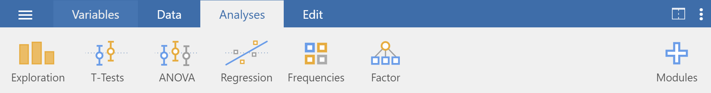
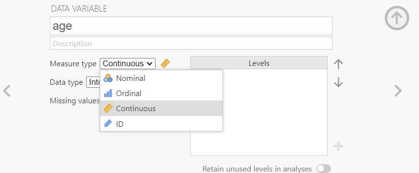
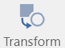
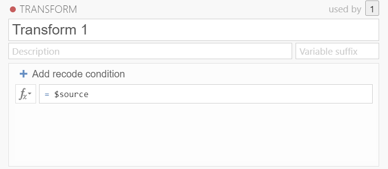

3 LAB I: Introduction to Jamovi and data preparation
3.1 Why Jamovi?
Jamovi is a new fee open “3rd generation” statistical software that is built on top of the programming language R (Figure 3.1). Designed from the ground up to be easy to use, Jamovi is a compelling alternative to costly statistical products such as SPSS and SAS.

3.2 Downloading and installing Jamovi
Jamovi is available for Windows (64-bit), macOS, Linux and ChromeOS. Installation on desktop is quite straight-forward. Just go to the Jamovi download page https://www.jamovi.org/download.html, and download the latest version (current release) for your operating system.
3.3 Navigating Jamovi
When jamovi first opens, we will see a screen something like in Figure 3.2.
To the left is the spreadsheet view, and to the right is where the results of statistical tests appear. Down the middle is a bar separating these two regions, and this can be dragged to the left or the right to change their sizes.
Let’s take a quick look at the Jamovi Main Menu, referred to hereafter as the Menu, as shown in Figure 3.3. This Menu is displayed at the very top of the Jamovi screen:
There are six tabs in the Menu (from left to right): 1. File (a layer with three horizontal levels \(\equiv\)), 2. Variables, 3. Data, 4. Analyses, 5. Edit, and 6. Settings (the three dots \(\vdots\) at the top right of the window) tabs. A toolbar appears whenever we click on a Menu tab (Table 3.1).
| Menu tab | Toolbar |
|---|---|
|
 |
|
This view allows us to easily navigate our variables and do the following:
|
|
Specifically, this tab allows us to do the following:
|
|
 We will spend most of our time in the Analyses Tab. The following six modules are pre-installed:
For example, if we want to perform regression analysis, we simply click the ’’Regression” button. All other modules need to be installed using the Modules button (Plus button) in our top-right | |
|
We can add extra information to our results using the buttons that are very similar to what we would find in Word (though there are fewer options). |
|
We can apply our preferences for a number of settings such as:
|


3.4 Types of Variables in Jamovi
Data variables can be one of four measure types:
Nominal: This type is for nominal categorical variables.
 Ordinal: This type is for ordinal categorical variables.
Ordinal: This type is for ordinal categorical variables. Continuous : this type is for variables with numeric values which are considered to be of Interval or Ratio scales.
Continuous : this type is for variables with numeric values which are considered to be of Interval or Ratio scales. ID: This will usally be our first column. This can be text or numbers, but it should be unique to each row.
ID: This will usally be our first column. This can be text or numbers, but it should be unique to each row.
Additionally, data variables can be one of three data types:
Integer: These are full numbers e.g. 1, 2, 3, … 100, etc. - Integers can be used for all three measure types . When used for Nominal/Ordinal data numbers will represent labels e.g. male=1; female=2.
Decimal: These are numbers with decimal points. e.g. 1.3, 5.6, 7.8, etc. - This will usually only be used for continuous data.
Text: This can be used for ordinal and nominal data.
The measure types are designated by the symbol in the header of the variable’s column. Note that some combinations of data-type and measure-type don’t make sense, and Jamovi won’t let us choose these.
| Measure | |||
|---|---|---|---|
| Data | Nominal | Ordinal | Continuous |
| Integer | \({\checkmark}\) | \({\checkmark}\) | \({\checkmark}\) |
| Decimal | \({\checkmark}\) | ||
| Text | \({\checkmark}\) | \({\checkmark}\) |
3.5 Importing data
3.5.1 The dataset
It is possible to simply begin typing values into the Jamovi spreadsheet as we would with any other spreadsheet software. Alternatively, existing datasets in a range of formats (OMV, Excel, CSV, SPSS, R data, Stata, SAS) can be opened in Jamovi. We will use the following dataset as an example (Figure 9.1).
(NOTE: You can find other formats of the data (OMV, Excel) at the link: https://osf.io/gvctz/).
The meta-data (data about the data) for this dataset are as following:
- sex: sex (1 = male, 2 = female).
- age: age in years.
- time_spend: hours spent on social media.
- \(q_1 ... q_{10}\): Ten questions (items) of Rosenberg Self-Esteem Scale (RSES). The 10 items are answered on a four point scale ranging from strongly agree to strongly disagree coded as follows: Strongly Agree = 3, Agree = 2, Disagree = 1, and Strongly Disagree = 0.
Positively worded Items 1, 2, 4, 6, and 7.
Negatively worded Items 3, 5, 8, 9, and 10 (codes should be reversed).
The scale ranges from 0-30 (we add the scores for all items), with 30 indicating the highest total score possible.
More information for the RSES: Rosenberg Self-Esteem Scale.
3.5.2 Opening the file
To open this csv file, click on the File tab  at the top left hand corner (just left of the Variables tab) (Figure 3.6).
at the top left hand corner (just left of the Variables tab) (Figure 3.6).

This will open the menu shown in Figure 3.7. Select ‘Open’ and then ‘This PC’. Choose the downloaded file from the files listed on ‘Browse’ which are stored on our computer folders:
The flowchart of the process is:
flowchart LR A(File tab) -.-> B(Open) -.-> C(This PC) -.-> D(Browse) -.-> E(Open \n 'the downloaded file')
We should see data now in the Spreadsheet view (Figure 3.8).
As we can see this is a data set with 258 observations and 13 variables. JAMOVI has classified all the variables as nominal ; however, only the sex variable is actually nominal.
3.6 Adding labels to codes
- sex variable
The first variable, named sex, is a categorical variable coded as 1 for males and 2 for females. Notice that it is correctly identified as a nominal variable in Jamovi.
We can assign labels to numerically coded values of categorical variables, such as sex, by accessing the data variable settings. One way to achieve this is by double-clicking on the variable name sex, which opens the additional menu of variable settings at the top of the Jamovi screen (Figure 3.9).
In this menu, we will find the Levels setup. Here, we can specify the labels that should appear for each category level. Click on the number “1” in the Levels box to edit its label, changing it from “1” to “male”. Similarly, click on the number “2” and change it to “female” (Figure 3.10).
Notice how the numbers “1” and “2” have moved to the lower right under the text we’re typing, allowing us to still see which label corresponds to each numerical code. Press Enter or click anywhere outside the labels box to save these labels.
We close the variable settings by pressing the arrow in the top-right corner  .
.
3.7 Changing the measure type
Next, we will change the measure type of age and time_spent variables from nominal to continuous.
- age variable
Double-click on the variable name age to open the data variable settings, as shown in Figure 3.11:
From the drop-down list of “Measure type” we select the continuous type  , as shown in Figure 3.12.
, as shown in Figure 3.12.

- time_spent variable
Instead of closing the data variable menu using the arrow in the top-right corner, we can click on the to proceed to the next variable setting, time_spent. As before, we select the continuous type for this variable from the “Measure type” drop-down list, as shown in Figure 3.13.
We close the variable settings by pressing the arrow in the top-right corner  .
.
- q1 to q10 variables
Finally, we will change the measure type of q1 to q10 variables from nominal to ordinal. In the Variables tab, we select the checkboxes for the q1 through q10 variables, as shown in Figure 3.14.
After that, we click on the Edit button to open the data variable settings, as shown in Figure 3.15.
From the drop-down list of “Measure type” we select the ordinal type  , as shown in Figure 3.16.
, as shown in Figure 3.16.
3.8 Filtering rows
Next, we select the Filters button  from the Data tab. This opens the “Row FILTERS” view at the top of the Jamovi screen where we can add a filter called “Filter 1” (Figure 3.17). Let’s say that we want to study only the adults from the participants in this survey.
from the Data tab. This opens the “Row FILTERS” view at the top of the Jamovi screen where we can add a filter called “Filter 1” (Figure 3.17). Let’s say that we want to study only the adults from the participants in this survey.
- Simple condition
In order to access functions, press the icon in the filter settings and from “VARIABLES” double-click on age (or we just type the variable name but if the variable has a space, we must use ticks '' around the variable name). Then type the condition age >= 18 in the formula box and press ENTER from the keyboard (Figure 3.17).
Relational (or comparison) operators in Jamovi
| symbol | read as |
|---|---|
| < | less than |
| > | greater than |
| == | equal to |
| <= | less than or equal to |
| >= | greater than or equal to |
| != | not equal to |
Notice that a column named Filter 1 has been added to the Spreadsheet view. Cells that meet the condition age >= 18 are checked with a green tick  , while the rest have a red x symbol
, while the rest have a red x symbol  . Lines with an
. Lines with an X are grayed out indicating that these observations are now outside of the current dataset.
There is also a switch where we can activate  or inactivate
or inactivate  the filter (note that an inactivate filter will remain visible and can be toggled to active at any time).
the filter (note that an inactivate filter will remain visible and can be toggled to active at any time).
It is also possible to hide all filter columns by clicking on the eye symbol  of the filters. In this case, all filters and the filtered data will remain active but will be invisible.
of the filters. In this case, all filters and the filtered data will remain active but will be invisible.
Finally, if we want to delete the filter permanently, we can click on the of the filter .
- Multiple conditions
But we can do more complicated filters than this! Let’s say that we’re interested in the adult females. In fact we can specify this in three ways:
a) by using the and operator in “Filter 1” which means that both conditions (adults and females) in the expression must be true at the same time. Therefore, we type the expression age >= 18 and sex == 'female' (Figure 3.18):
Note that in the above expression we can also use double quotes around the "female" (i.e., age >= 18 and sex == "female") or even the coded value (i.e., age >= 18 and sex == 2).
b) by adding the second condition (i.e. sex == "female") as another expression to “Filter 1” (by clicking the small + beside the first expression) (Figure 3.19):
This additional expression comes to be represented with its own column F1(2) (Figure 3.19), and by looking at the ticks and crosses, we can see which expression is responsible for excluding each row.
c) adding a new “Filter 2” (by selecting the large + to the left of the filters dialog box) (Figure 3.20). In this case, we can activate or inactivate the filters separately.
We close the filter settings by pressing the arrow in the top-right corner  .
.
Important
Filters in Jamovi exclude the rows for which the expression is not true. When filters are active, all results will be based on the filtered data. If we want to see unfiltered results we will either need to delete the filter or toggle it to inactive.
3.9 Transforming a variable
3.9.1 Transform a quantitative variable into a qualitative variable
Sometimes it can be useful to convert a quantitative variable into a qualitative variable with levels. For example, the time_spent can be categorized as follows:
less than or equal to 3 “0-3”
4 to 7 “4-7”
8 to 11 “8-11”
greater than 11 “>11”
Select time_spent variable and click the Transform button  from the toolbar of the Data tab. This opens the “TRANSFORMED VARIABLE” view, where we can set the name of the transformed variable such as time_spent2 and create the transformation. To do this, select the source variable, the time_spent in this case, in the Source Variable field and create a new transformation using transform field (Figure 3.21), which is initially set to ‘none’.
This opens the “TRANSFORM” view where Jamovi gives each transformation a name (e.g., Transform 1; if we want we can change it). This allows us to use it again later on other variables if we wish. We can also add a description (Figure 3.22).

Now we need to add conditions. Jamovi uses simple if ... else statements and executes each statement starting from the top. So let’s start!
First, select + Add recode condition. Second, we need to fill the boxes with the information as follows (Figure 3.23):
- The
$sourceis the variable we want to transform (heretime_spent)- don’t change this. - Select the appropriate comparison operator (here
<=) - In the next box, we will put the
time_spentvalue we want as the cut off point (e.g., 3). - After the use, add our new label (here
'0-3'). If we are using text we must enclose it in'...'
We can add as many conditions as we want by selecting + Add recode condition. This will add a new if $source line into the box (Figure 3.24). Remember they will be executed in order.
Finally, after the else use box just add the label for the data that does not meet the above conditions (here '>11'), as shown in Figure 3.26.
3.9.2 Reverse scoring of items
To compute the total score for all items of the RSES, we first need to reverse the scores of the negatively worded questions (3, 5, 8, 9, and 10). To do this, we can follow these simple steps.
In the Variables tab, we select the checkboxes for the q3, q5, q8, q9, and q10 variables, as shown in Figure 3.27.
After that, we click on the Transform button ) from the toolbar of the Variables tab to open the Transform variable settings. Then, we Create New Transform, as shown in Figure 3.28.
In the Transform view, we enter _R as a suffix for the variable names and specify 3-$source in the condition box, as shown in Figure 3.29.
3.10 Compute a new variable
Finally, we compute each participant’s total score (ranging from 0 to 30) based on their responses to the 10 questions of the Rosenberg Self-Esteem Scale.
Adding computed variables to a Jamovi spreadsheet is straightforward. Click on the Compute button ) from the toolbar of the Data tab. An empty column has been created at the end of our dataset (Figure 3.31). The black dot symbol in the right of the column header indicates that this is a computed variable.
To set up the computed variable, either double-click the column header, or click the Setup button ) in the Data tab. This opens the “COMPUTED VARIABLE” view, where we can name the computed variable score. Next, we select the SUM function from the available options for use in the Formula box. Finally, we add the q-variables in the formula separated by comma (note that we must use the reversed variables in the sum) and we press ENTER (Figure 3.32).